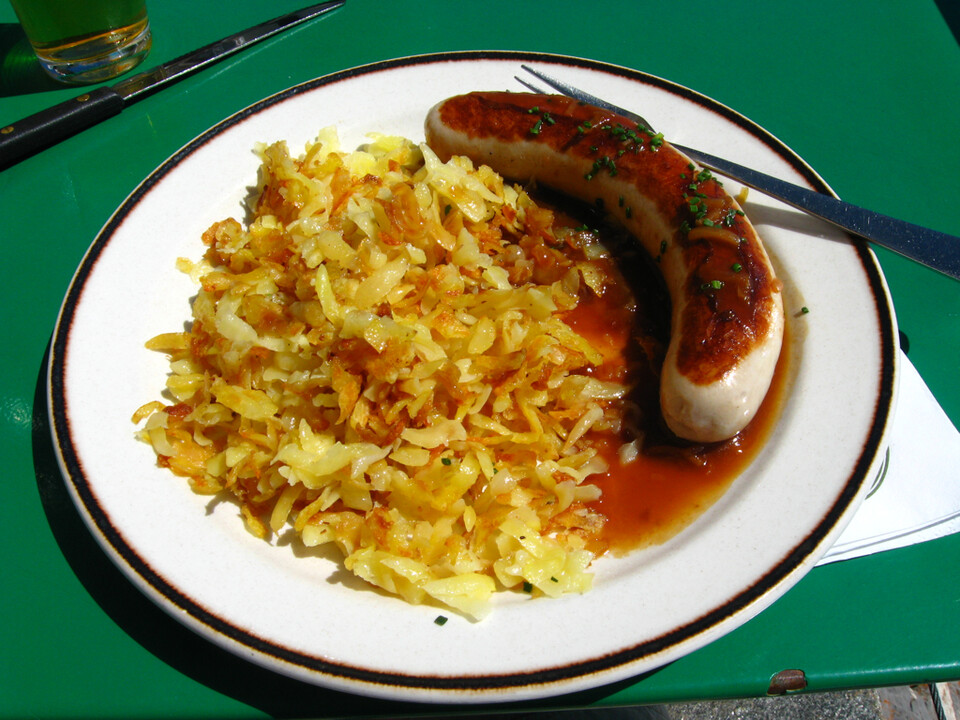
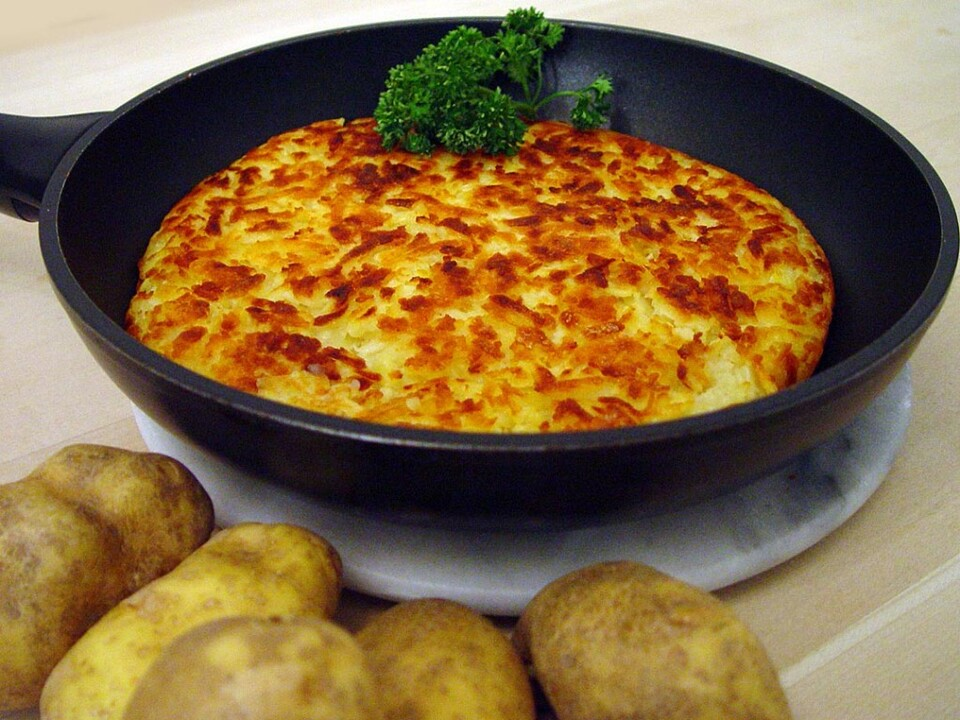
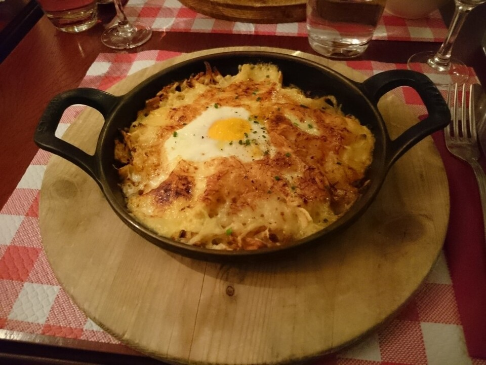

Rösti
Descripción
Se elabora principalmente con patatas que suelen mezclarse con algunas grasas de origen animal.
Ingredientes
- Patatas
- Sal
- Mantequilla o aceite
- Cebolla (opcional)
- Tocino en trocitos (opcional)
- Queso rallado (opcional)
- Nuez moscada (opcional)
- Pimienta negra (opcional)
Preparación
- Hervir las patatas con piel el día anterior y dejarlas enfriar en el refrigerador.
- Al día siguiente, pelar las papas y rallarlas con un rallador grueso.
- Salpimentar las papas ralladas al gusto. Puedes agregar cebolla picada, queso o tocino si deseas.
- Calentar mantequilla o aceite en una sartén a fuego medio.
- Colocar las patatas ralladas en la sartén y presionarlas ligeramente para formar una especie de torta.
- Cocinar a fuego medio hasta que la parte inferior esté dorada y crujiente (unos 10-15 minutos).
- Dar la vuelta con cuidado (puedes ayudarte de un plato) y cocinar el otro lado hasta que también esté dorado.
Cómo se come
- Puede comerse solo como plato principal o como acompañamiento.
- Es común acompañarlo con huevos fritos, salchichas o tocino.
- En Suiza, a menudo se sirve junto a platos con carne, como estofados o filetes.
- Es ideal para el desayuno, brunch o como cena ligera.
Mas imágenes


